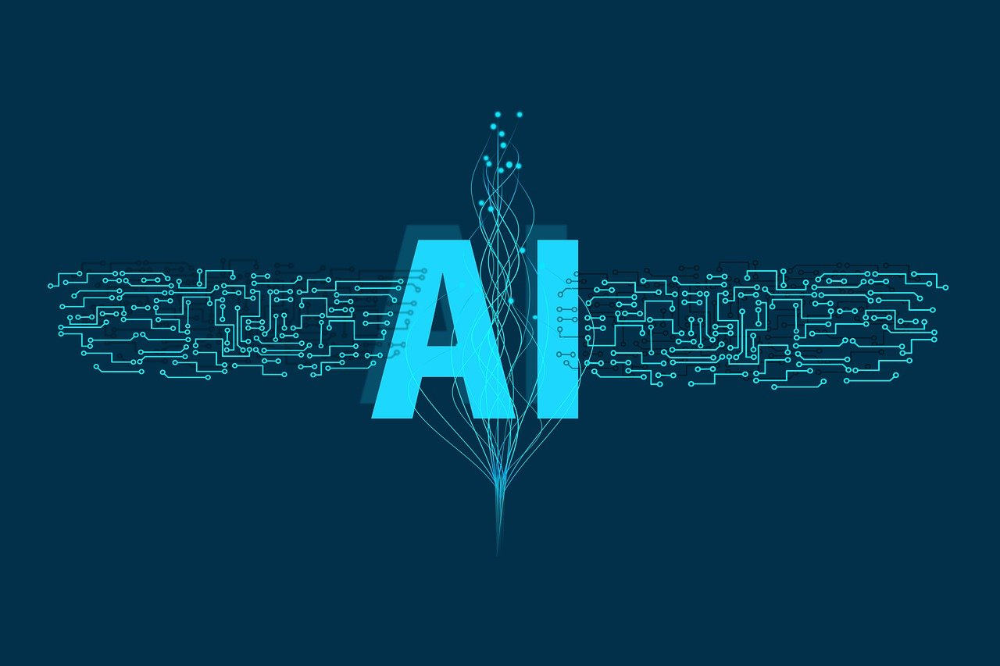
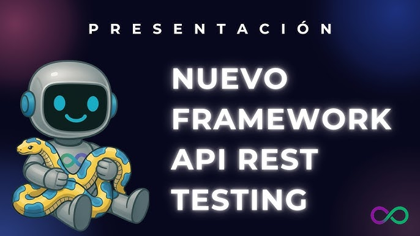

la IA y el futuro en la tecnologias
La inteligencia artificial (IA) está transformando la forma en que vivimos y trabajamos. Desde la automatización de tareas hasta la creación de nuevas oportunidades, la IA tiene el potencial de revolucionar diversos sectores. Sin embargo, también plantea desafíos éticos y sociales que debemos abordar para garantizar un futuro equitativo y sostenible.

Un nuevo framework para el desarrollo web
Un nuevo framework de desarrollo web ha sido lanzado, prometiendo simplificar la creación de aplicaciones web modernas. Con características innovadoras y una comunidad activa, este framework busca mejorar la eficiencia y la experiencia del desarrollador. Los expertos en tecnología están entusiasmados por explorar sus capacidades y ver cómo puede impactar el panorama del desarrollo web.

El futuro del desarrollo Web
¿Qué nos depara el diseño de interfaces en los próximos años?